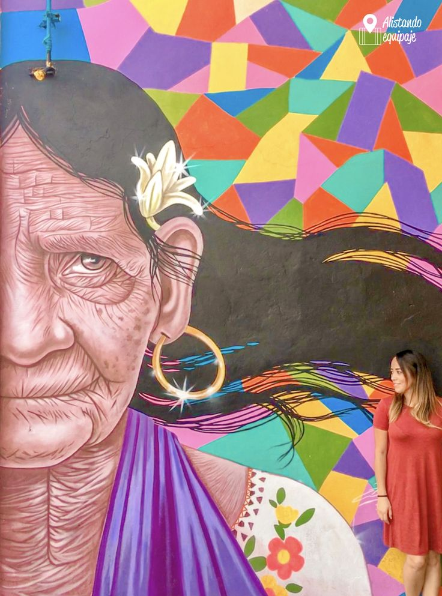
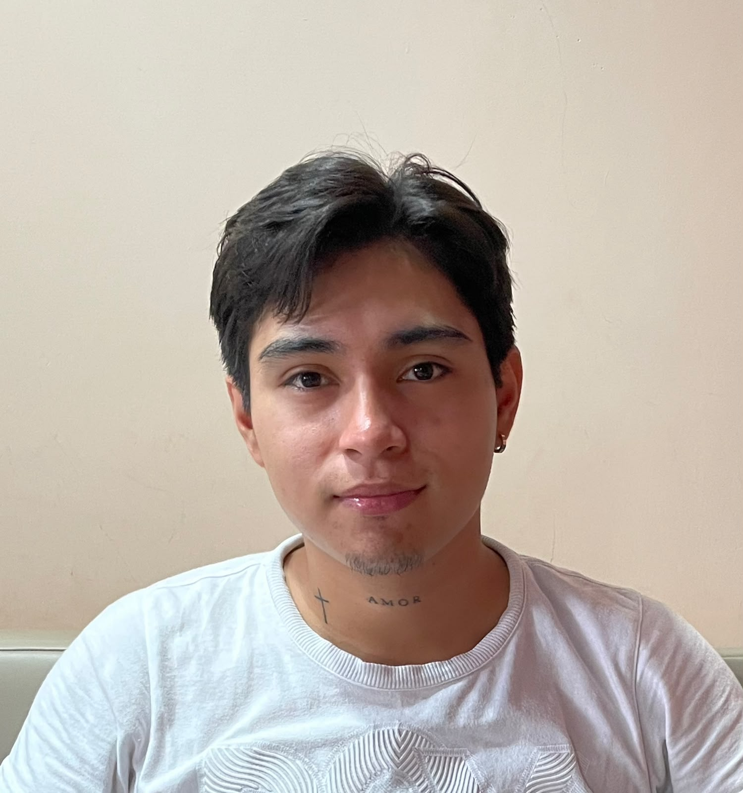
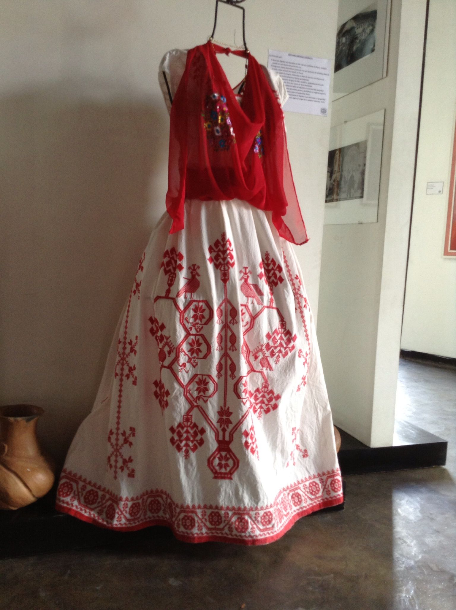

Papantla

Por María García
Mural totonaco
Hermosa pintura totonaca.
Somos un grupo de estudiantes de Ingenieria En Tecnologias Computacionales orgullosamente veracruzanos, firmemente comprometidos con la promoción de la cultura Totonaca. Desarrollamos esta plataforma para empoderar a nuestros comerciantes locales y conectar el arte de nuestros artesanos con el mundo digital.

Líder de Desarrollo y Arquitecto Web
La mente maestra a cargo de la programación, infraestructura y dirección del proyecto. Apasionado por crear código limpio y soluciones tecnológicas de alto impacto social.
📍 Universidad Veracruzana, Papantla de Olarte

Ingeniero Frontend e Interfaz
Pieza clave en el diseño visual y la experiencia de usuario, asegurando que la plataforma sea intuitiva, moderna y accesible para todos.
📍 Universidad Veracruzana, Poza Rica

Ingeniero Backend y Base de Datos
Encargado de la lógica interna, estructuración de datos y el flujo del sistema para que cada pedido funcione a la perfección.
📍 Universidad Veracruzana, Papantla de Olarte
Cada obra es de comercio justo y directo. Tu pedido va sin intermediarios al WhatsApp del artesano.

Hermosa pintura totonaca.

Modelado a mano en barro rojo y cocido a cielo abierto con técnicas prehispánicas.

Tejido apretado e ideal para el sol, elaborado con la mas alta calidad de textiles.